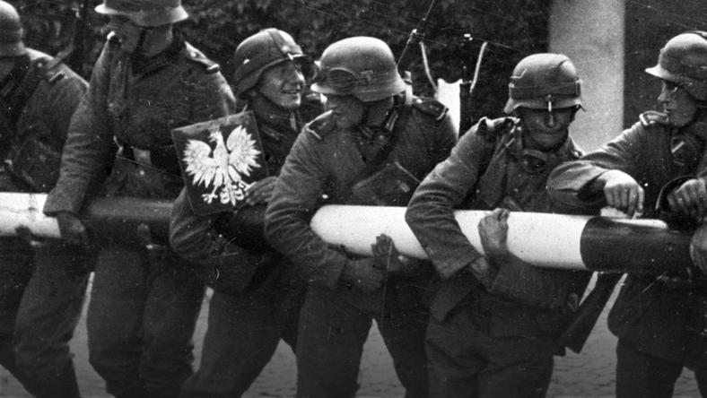

II Wojna swiatowa
II wojna światowa – największa wojna światowa w historii, trwająca od 1 września 1939 do 2 września 1945 (w Europie do 8/9 maja 1945). Jej teatr działań wojennych objął prawie całą Europę, wschodnią i południowo-wschodnią Azję, północną Afrykę, część Bliskiego Wschodu i wszystkie oceany. Niektóre epizody wojny rozgrywały się nawet w Arktyce i Ameryce Północnej. Poza większością państw europejskich i ich koloniami, brały w niej udział państwa Ameryki Północnej i Ameryki Południowej oraz Azji. Głównymi stronami konfliktu były państwa Osi i państwa koalicji antyhitlerowskiej (alianci). W wojnie uczestniczyło 1,7 mld ludzi, w tym 110 mln ludzi z bronią[2]. Według różnych szacunków zginęło w niej od 50[3] do 78[4] milionów ludzi.

Za datę rozpoczęcia wojny przyjmuje się 1 września 1939 roku – agresję Niemiec na Polskę. 3 września 1939, po zignorowaniu przez III Rzeszę ultimatum w sprawie bezzwłocznego wycofania wojsk z Polski, Wielka Brytania i Francja wypowiedziały wojnę III Rzeszy (w piśmiennictwie zachodnim podaje się czasami tę datę jako początek wojny światowej). W historiografii ZSRR i współczesnej rosyjskiej używane jest pojęcie tzw. wielkiej wojny ojczyźnianej – od 22 czerwca 1941 ataku III Rzeszy na ZSRR do 9 maja 1945 – powtórzonej kapitulacji III Rzeszy w Berlinie, według czasu moskiewskiego. Historiografia sowiecka i współczesna rosyjska odrzuca bowiem udział ZSRR w wojnie po stronie III Rzeszy w latach 1939–1941 – od paktu Ribbentrop-Mołotow z 23 sierpnia 1939 i niemiecko-sowieckiego traktatu o granicach i przyjaźni z 28 września 1939 (agresja ZSRR na Polskę, wojna zimowa przeciw Finlandii, okupacja krajów bałtyckich i Besarabii) do ataku III Rzeszy na ZSRR.
II Wojna Swiatowa mobile
II wojna światowa – największa wojna światowa w historii, trwająca od 1 września 1939 do 2 września 1945 (w Europie do 8/9 maja 1945). Jej teatr działań wojennych objął prawie całą Europę, wschodnią i południowo-wschodnią Azję, północną Afrykę, część Bliskiego Wschodu i wszystkie oceany. Niektóre epizody wojny rozgrywały się nawet w Arktyce i Ameryce Północnej. Poza większością państw europejskich i ich koloniami, brały w niej udział państwa Ameryki Północnej i Ameryki Południowej oraz Azji. Głównymi stronami konfliktu były państwa Osi i państwa koalicji antyhitlerowskiej (alianci). W wojnie uczestniczyło 1,7 mld ludzi, w tym 110 mln ludzi z bronią[2]. Według różnych szacunków zginęło w niej od 50[3] do 78[4] milionów ludzi.
Za datę rozpoczęcia wojny przyjmuje się 1 września 1939 roku – agresję Niemiec na Polskę. 3 września 1939, po zignorowaniu przez III Rzeszę ultimatum w sprawie bezzwłocznego wycofania wojsk z Polski, Wielka Brytania i Francja wypowiedziały wojnę III Rzeszy (w piśmiennictwie zachodnim podaje się czasami tę datę jako początek wojny światowej). W historiografii ZSRR i współczesnej rosyjskiej używane jest pojęcie tzw. wielkiej wojny ojczyźnianej – od 22 czerwca 1941 ataku III Rzeszy na ZSRR do 9 maja 1945 – powtórzonej kapitulacji III Rzeszy w Berlinie, według czasu moskiewskiego. Historiografia sowiecka i współczesna rosyjska odrzuca bowiem udział ZSRR w wojnie po stronie III Rzeszy w latach 1939–1941 – od paktu Ribbentrop-Mołotow z 23 sierpnia 1939 i niemiecko-sowieckiego traktatu o granicach i przyjaźni z 28 września 1939 (agresja ZSRR na Polskę, wojna zimowa przeciw Finlandii, okupacja krajów bałtyckich i Besarabii) do ataku III Rzeszy na ZSRR.